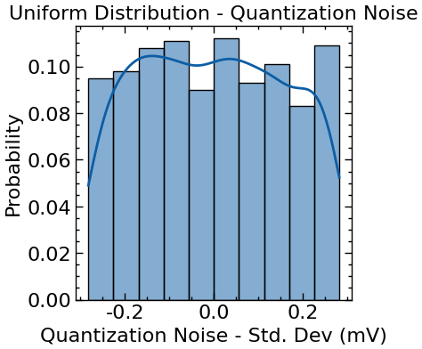

Signal Representation
This practical class reviews some of the possible representations of a signal both in the time domain and in the frequency domain. All of the practical classes will take advantage of the Python programming language to study and model signal converters. The Jupyter Notebooks are a great way to segment the developed code, enabling an easier debugging and learning experience. The Jupyter Notebooks also enable the introduction of Markdown latex HTML notes in the middle of the code cells, offering a truly complete note-taking environment.
import numpy as np
import matplotlib.pyplot as plt
import scienceplots
plt.style.use(['science', 'notebook'])
%matplotlib inline
Signal Representation in the Time-Domain
This section covers some nuances of the represenation of a signal (voltage/current/code) in the time-domain, throughout an independent axis representing time. Two main aspects of the representation of a signal are presented:
- 1- A signal can be decomposed on an infinite sum of fundamental trigonometric functions (sine and cosine), according to Fourier's Signal Theory;
- 2- The importance of using a differential signal chain is analysed to observe its impact on the overall distortion of the output signal.
# define the number of points for the simulation
# NOTE: This enables a better control of the simulation time and memmory resources
Np = 1001
# define time base
Fs = 100e3
Ts = 1/Fs
tD = np.arange(0,Np)*Ts; # (0:Np-1) == np.arange(0,Np)
tD
# define the signals
Amp1 = 1
f1 = 1e3
phase1 = 0
phase1_rad = np.deg2rad(phase1)
x1 = Amp1*np.sin(2*np.pi*f1*tD + phase1_rad)
x1
# visualize the signals
fig, ax = plt.subplots(1,1, figsize = (10,4))
ax.plot(tD, x1, lw = 2, ls="-", color='b', ms=3)
ax.grid(True)
ax.set_ylabel("Voltage (V)")
ax.set_xlabel("Time (s)")
ax.legend()
plt.show()

# changing the frequency of the signal
# define the new signal
Amp2 = 1
f2 = 0.5e3
phase2 = 0
phase2_rad = np.deg2rad(phase1)
x2 = Amp2*np.sin(2*np.pi*f2*tD + phase1_rad)
x2
# visualize the signals
fig, ax = plt.subplots(1,1, figsize = (10,4))
ax.plot(tD, x2, lw = 2, ls="-", color="r", ms=3)
ax.grid(True)
ax.set_ylabel("Voltage (V)")
ax.set_xlabel("Time (s)")
ax.legend()
plt.show()

# observing 2 sinusoids in the same plot
# second harmonic
Amp2 = 0.5
f2 = 2e3
phase2_rad = np.deg2rad(0)
x2 = Amp2*np.sin(2*np.pi*f2*tD + phase2_rad)
# third harmonic
Amp3 = 0.2
f3 = 3e3
phase3_rad = np.deg2rad(0)
x3 = Amp3*np.sin(2*np.pi*f3*tD + phase3_rad)
Visualize the signals and infer on the veracity of the Fourier Series representation of the signal - any signal can be represented as a sum of sinusoids! In this case, the sum of x1 with x3 can almost generate a digital signal denominated as a square wave.
fig, ax = plt.subplots(3,1, figsize = (10,10))
ax[0].plot(tD, x1, lw = 2, ls="-", color="b", marker="None", ms=3, label="x1")
ax[0].plot(tD, x2, lw = 2, ls="-", color="g", marker="None", ms=3, label="x2")
ax[0].plot(tD, x3, lw = 2, ls="-", color="r", marker="None", ms=3, label="x3")
ax[0].set_title("x1(t), x3(t)")
ax[0].legend(frameon=True, facecolor="pink", edgecolor="none")
ax[0].grid(True)
ax[0].set_ylabel("Voltage (V)")
ax[1].plot(tD, x1+x2, lw = 2, ls="-", color="k", marker="None", ms=3)
ax[1].set_title("x1(t) + x2(t)")
ax[1].grid(True)
ax[1].set_ylabel("Voltage (V)")
ax[2].plot(tD, x1+x3, lw = 2, ls="-", color="k", marker="None", ms=3)
ax[2].set_title("x1(t) + x3(t)")
ax[2].grid(True)
ax[2].set_ylabel("Voltage (V)")
ax[2].set_xlabel("Time (s)")
fig.tight_layout()
plt.show()
From the above signal representations, two conclusions can be made:
- The odd harmonics allow to preserve the area ratio of the positive wave and negative wave of the signal in relation to the average value.In other words, the odd harmonics allow the signal to preserve its symmetry.
- The same is not true for the even harmonics. The even harmonics do not ensure that the signal preserves its symmetry in relation to its average value.
Any signal processing chain, or signal conversion chain should always be differential, in which the processed signals feature a phase of 180 º between each other. Differential signals enable the natural cancellation of the even harmonic components of the signal, significantly improving the linearity of the signal at the output of the signal processign chain.
Demo:
Given the signal:
$$ s(t) = a_1 sin(2\pi f_1t + \phi_1 ) + (a_2sin(2\pi f_1t + \phi_2 ))^2 + (a_3 *sin(2\pi f_1t + \phi_3 ))^3 $$
where: $f_2 = 2f_1$ and $f_3=3f_1$
The differential rendition of this signal would give us:
$$ s(t) - s(t+180º) = 2a_1sin(2\pi f_1t + \phi_1) + \frac{4a_3^2}{3}sin(2\pi 3f_1t + \phi_3) + s_{DC} $$
As it is possible to observe, the even harmonic components are cancelled, and thus the distortion is reduced.
Signal Representation in the Frequency-Domain
This section covers the representation of the signals defined in the previous section in the frequency domain. The signal representation defined by Fourier's series holds true in the frequency spectrum. A depiction of this is the representation of the sum of the x1, x2 and x3 signals in the frequency spectrum, featuring the resulting three dirac distributions. The frequencies of these distributions correspond to the fundamental, second and third harmonics of the signal resulting from the sum of the signals.
# spectral analysis using fft - fast fourier transform
yt = x1+x2+x3
yf = np.abs(np.fft.fftshift(np.fft.fft(yt) / Np)) # [V] # voltage in the frequency axis
# NOTE: fft(yf) is divided by Np in order to normalize the resulting frequency spectrum from the digital fourier transform
fD = np.fft.fftshift(np.fft.fftfreq(Np, Ts)) # [Hz] # frequency axis
power_yf = (yf*yf) # [V^2] - square the voltage spectrum to obtain the power spectrum
power_yf_dB = 10 * np.log10(power_yf) # [dB] - convert the power spectrum to dB
power_yf_dB
yf2 = np.abs(np.fft.fftshift(np.fft.fft(x1) / Np)) # [V] # voltage in the frequency axis
# NOTE: fft(yf) is divided by Np in order to normalize the resulting frequency spectrum from the digital fourier transform
power_yf2 = (yf2*yf2) # [V^2] - square the voltage spectrum to obtain the power spectrum
power_yf2_dB = 10 * np.log10(power_yf2) # [dB] - convert the power spectrum to dB
# plot the frequency spectrum
fig, ax = plt.subplots(2,1, figsize=(10,5))
f_scale = 1e3# frequency scale [Hz]
p_scale = 1 # power scale in [dB]
ax[0].stem(
fD[fD>=0] / f_scale,
power_yf_dB[fD>=0] / p_scale,
bottom=np.min(power_yf_dB / p_scale),
#use_line_collection=True,
linefmt="b-",
markerfmt="none",
basefmt="r-",
)
ax[0].set_xlabel("Frequency (KHz)")
ax[0].set_ylabel("Power (dB)")
ax[0].set_title("Frequency spectrum of x1+x2+x3")
f_lim = 4e3/f_scale # limitting frequency
ax[0].set_xlim([0, f_lim])
ax[0].set_ylim([-40, 0])
ax[1].plot(
fD[fD>=0] / f_scale,
power_yf2_dB[fD>=0] / p_scale,
ls="-",
color="k",
marker="none"
)
ax[1].set_xlabel("Frequency (KHz)")
ax[1].set_ylabel("Power (dB)")
ax[1].set_xlim([0, f_lim])
fig.tight_layout()
As it is possible to observe, the plot of x1 in black (the second curve) gives us a spectral dirac that is not concentrated on a single frequency bin, and rather spreads throughout the frequency with decreasing power throughout the spectrum.
One possible solution: Windows!
The use of a window defining the simulation time window in which the spectrum of the signal will be analysed can significantly improve the spectral quality of the observed signal in the frequency spectrum. The following example uses a Blackman-Harris window, multiplying it to the signal in the time-domain. As such, the obtained signal's frequency spectrum features a much more perceptible definition of the central frequency of each signal's harmonic. The resulting computed spectral power of each harmonic appears to be lower than the spectrum obtained without the use of a window. This is a mere appearance, and it results from the fact that the Blackman-Harris window causes the power of each harmonic to be spread throughout 5 frequency bins (2 bins before, the central bin of the harmonic and 2 bins after).
NOTE: Another solution (which is actually preferred) would be to use coherent sampling - ensuring the sampling frequency is simultaneously a prime number and a multiple of the input signal's frequency. Both solutions can also be used simultaneously.
# applying a blackman harris window to
# better observe the signal's spectrum
from scipy import signal
window = signal.windows.blackmanharris(Np)
fig,ax = plt.subplots(1,figsize=(4,4))
ax.set_xlabel('Samples')
ax.set_ylabel('Window Amplitude')
plt.plot(window)

# spectral analysis using fft - fast fourier transform
ytbm = yt*signal.windows.blackmanharris(Np)
yfbm = np.abs(np.fft.fftshift(np.fft.fft(ytbm) / Np)) # [V] # voltage in the frequency axis
# NOTE: fft(yf) is divided by Np in order to normalize the resulting frequency spectrum from the digital fourier transform
power_yfbm = (yfbm*yfbm) # [V^2] - square the voltage spectrum to obtain the power spectrum
power_yfbm_dB = 10 * np.log10(power_yfbm) # [dB] - convert the power spectrum to dB
# plot the frequency spectrum
fig, ax = plt.subplots(2,1, figsize=(10,5))
f_scale = 1e3# frequency scale [Hz]
p_scale = 1 # power scale in [dB]
ax[0].stem(
fD[fD>=0] / f_scale,
power_yf_dB[fD>=0] / p_scale,
bottom=np.min(power_yf_dB / p_scale),
#use_line_collection=True,
linefmt="b-",
markerfmt="none",
basefmt="r-",
)
ax[0].set_xlabel("Frequency (KHz)")
ax[0].set_ylabel("Power (dB)")
ax[0].set_title("Frequency spectrum of x1+x2+x3")
f_lim = 4e3/f_scale # limitting frequency
ax[0].set_xlim([0, f_lim])
ax[0].set_ylim([-40, 0])
ax[1].plot(
fD[fD>=0] / f_scale,
power_yf_dB[fD>=0] / p_scale,
ls="-",
color="k",
marker="none",
)
ax[1].plot(
fD[fD>=0] / f_scale,
power_yfbm_dB[fD>=0] / p_scale,
ls="-",
color="r",
marker="none",
)
ax[1].set_xlabel("Frequency (KHz)")
ax[1].set_ylabel("Power (dB)")
ax[1].set_xlim([0, f_lim])
fig.tight_layout()

Noise Sources and Representation
To perform a more accurate simulation of the signal converters that are going to be studied in this course, a superposition of noise to the processed signal is inevitable and required. The process of quantizing an ideal signal without any supperposed noise will inevitably add a quantization error to the signal, as seen in the following equation.
$$ s_Q(t) = s(t) + \epsilon_Q(t) \hspace{10pt} (1) $$
where $\epsilon_Q(t)$ is the quantization error, $s_Q(t)$ is the quantized signal and $s(t)$ is the processed signal.
However, in reality all analog signals are subject to some form of noise. If the processed signal features a given level of noise power superposed to it, and the signal converter/quantizer features an high-enough quantization precision, the quantization error can actually be well approximated by white noise, as seen in (2). White noise is present throughout all the spectrum of both the signal and the quantizing system. It features a constant power spectral density throughout the system's operation spectrum, and as such it is very easy to model through a uniform distribution.
$$ s_Q(t) = (x(t) + n(t)) + \epsilon_Q(t) = x(t) + v_{NQ}(t) \hspace{10pt} (2) $$
where $x(t)$ is the processed signal, $n(t)$ is the noise superposed to the processed signal and $v_{NQ}(t)$ is the quantization white noise approximated by the sum of $n(t)$ and $\epsilon_Q(t)$.
from numpy.random import normal, uniform # random numbers fitted into a normal or uniform distribution
import seaborn as sns # to observe the noise signal's histogram
# define the quantizer's main parameters
nbits = 4 # number of bits
vref = 0.9 # reference voltage [V]
vlsb = vref / (2**nbits) # fundamental step votlage of the quantizer [V]
# define the noise parameters
vqmean = 0 # quantizer's mean voltage [V]
vqvar = (vlsb**2)/12 # quantization noise variance [V]
vqstddev = np.sqrt(vqvar) # quantization noise standard deviation (Vqrms) [V]
# generate the noise signal
vq = uniform(-vqstddev, vqstddev, Np) # quantization noise signal with a uniform dist (white noise)[V]
#sns.distplot(vq, bins=10, hist_kws={"edgecolor":"black"})
# frequency domain analysis of the white noise signal
vqf = np.abs(np.fft.fftshift(np.fft.fft(vq) / Np)) # [V] # voltage in the frequency axis
pqf = (vqf*vqf) # [V^2] - square the voltage spectrum to obtain the power spectrum
pqf_dB = 10 * np.log10(pqf) # [dB] - convert the power spectrum to dB
# plot the frequency spectrum
# plot the noise signal in the time domain, frequency domain
# and its histogram
fig, ax = plt.subplots(3,1, figsize=(10,10))
ax[0].plot(tD, vq, ls="-", color="k", marker="none")
ax[0].set_xlabel("Time (s)")
ax[0].set_ylabel("Voltage (V)")
ax[0].set_title("Quantization noise signal")
ax[1].plot(
fD[fD>=0] / f_scale, pqf_dB[fD>=0] / p_scale,
ls="-", color="gray", marker="none")
ax[1].set_xlabel("Frequency (KHz)")
ax[1].set_ylabel("Power (dB)")
ax[1].set_title("Quantization noise signal's frequency spectrum")
sns.histplot(vq, ax=ax[2], color="gray")
ax[2].hlines(
y=np.mean(np.histogram(vq, bins=10)[0]),
xmin=-vqstddev, xmax=vqstddev, color="r")
ax[2].set_xlabel("Voltage (V)")
ax[2].set_ylabel("Count")
ax[2].set_title("Quantization noise signal's histogram")
ax[0].grid()
ax[1].grid()
ax[2].grid(False)
fig.tight_layout()

# define the noise parameters
vqmean = 0 # quantizer's mean voltage [V]
vqvar = (vlsb**2)/12 # quantization noise variance [V]
vqstddev = np.sqrt(vqvar) # quantization noise standard deviation (Vqrms) [V]
# generate the noise signal
vq = normal(vqmean, vqstddev, Np) # gaussian noise signal with a normal dist [V]
#sns.distplot(vq, bins=10, hist_kws={"edgecolor":"black"})
# frequency domain analysis of the white noise signal
vqf = np.abs(np.fft.fftshift(np.fft.fft(vq) / Np)) # [V] # voltage in the frequency axis
pqf = (vqf*vqf) # [V^2] - square the voltage spectrum to obtain the power spectrum
pqf_dB = 10 * np.log10(pqf) # [dB] - convert the power spectrum to dB
# plot the frequency spectrum
# plot the noise signal in the time domain, frequency domain
# and its histogram
#! OBSERVE A NOISE SIGNAL DEFINED USNG A NORMAL DISTRIBUTION
fig, ax = plt.subplots(3,1, figsize=(10,10))
ax[0].plot(tD, vq, ls="-", color="k", marker="none")
ax[0].set_xlabel("Time (s)")
ax[0].set_ylabel("Voltage (V)")
ax[0].set_title("Gaussian noise signal")
ax[1].plot(
fD[fD>=0] / f_scale, pqf_dB[fD>=0] / p_scale,
ls="-", color="gray", marker="none")
ax[1].set_xlabel("Frequency (KHz)")
ax[1].set_ylabel("Power (dB)")
ax[1].set_title("Gaussian noise signal's frequency spectrum")
sns.histplot(vq, ax=ax[2], color="gray", edgecolor="gray", kde=True)
#ax[2].vlines(
# x=np.mean(vq),
# ymin=0, ymax=np.mean(np.histogram(vq, bins=10)[0]), color="r")
ax[2].set_xlabel("Voltage (V)")
ax[2].set_ylabel("Count")
ax[2].set_title("Gaussian noise signal's histogram")
ax[0].grid()
ax[1].grid()
ax[2].grid(False)
fig.tight_layout()
# let us now superpose the noise signal to the x1 signal and observe
# the resulting signal's frequency spectrum, histogram and time domain
Amp1 = 0.2 # amplitude of the sine wave [V]
x1 = Amp1*np.sin(2*np.pi*f1*tD + phase1_rad) # [V] - sine wave
vq = uniform(-vqstddev, vqstddev, Np) # quantization noise signal with a uniform dist (white noise)[V]
st = x1 + vq
stf = np.abs(np.fft.fftshift(np.fft.fft(st) / Np)) # [V] # voltage in the frequency axis
ptf = (stf*stf) # [V^2] - square the voltage spectrum to obtain the power spectrum
ptf_dB = 10 * np.log10(ptf) # [dB] - convert the power spectrum to dB
# plot the frequency spectrum
# plot the noise signal in the time domain, frequency domain
# and its histogram
fig, ax = plt.subplots(3,1, figsize=(10,10))
ax[0].plot(tD, st, ls="-", color="k", marker="none")
ax[0].set_xlabel("Time (s)")
ax[0].set_ylabel("Voltage (V)")
ax[0].set_title(r"Quantized signal - $s(t)$")
ax[1].plot(
fD[fD>=0] / f_scale, ptf_dB[fD>=0] / p_scale,
ls="-", color="gray", marker="none")
ax[1].set_xlabel("Frequency (KHz)")
ax[1].set_ylabel("Power (dB)")
ax[1].set_title("Quantized signal's frequency spectrum")
sns.histplot(st, ax=ax[2], color="gray", kde=True)
ax[2].set_xlabel("Voltage (V)")
ax[2].set_ylabel("Count")
ax[2].set_title("Quantized signal's histogram")
ax[0].grid()
ax[1].grid()
ax[2].grid(False)
fig.tight_layout()

Ideal ADC and DAC modelling
The models of an ideal ADC and DAC biased with a Vref voltage and N bits of resolution are presented in this notebook. The covnersion functions of both converters were created using the lambda programming style. Using this style, the creator function for the ADC or DAC receives the 2 fundamental parameters defining these ideal electronic systems:
- Vref - The reference/biasing voltage of the converter;
- Nbits - the number of bits of the converter system (its digital resolution).
from functools import reduce
import numpy as np
import matplotlib.pyplot as plt
import scienceplots
plt.style.use(['science', 'notebook'])
%matplotlib inline
# define the function to convert a binary vector to decimal
def bin2dec(x, width):
"""Convert a numpy array from binary to decimal.
IF the input is an array of binary arrays,
the returned output is an array of the corresponding
decimals in their corresponding indexes.
Parameters:
x: numpy array
b: base of the number system
"""
x = np.array(x)
if x.size == width:
assert len(x) == width, "The length of the vector must be equal to the number of bits"
return reduce(lambda x,b: 2*x + b, x)
assert len(x[0]) == width, "The length of the vector must be equal to the number of bits"
return np.array(np.array([reduce(lambda xval,b: 2*xval + b, xval) for xval in x]))
def dec2bin(x, width):
"""Convert a numpy array from decimal to binary
If the input is an array of decimals, the returned
binary arrays are the codes corresponding to
each decimal in its corresponding index.
Parameters:
x: numpy array
b: base of the number system
"""
x = np.array(x)
if x.size == 1:
return np.array([int(c) for c in np.binary_repr(x, width=width)])
return np.array([np.array([int(c) for c in np.binary_repr(subx, width=width)]) for subx in x])
# test
x = np.array([1,0,1,1,0,1])
assert bin2dec(x,6) == 45
x = np.array([1,0,1])
assert bin2dec(x,3) == 5
Digital-to-Analog Converter Modelling
This section presents the definition of the ideal model for the transfer function of a DAC. The corresponding transfer function that is implemented through a lambda programming style can be observed in (1). There are other possible solutions, such as using an object-oriented programming approach by defining a DAC object with a "convert" method.
$$ V_{OUT}(D_{in}) = base_{10}{D_{in}}*V_{LSB}\hspace{10 pt} (1) $$
where $D_{in}$ is the input binary word of the DAC, $V_{LSB}$ is the Least Significant Bit step voltage and $V_{OUT}$ is the output voltage of the DAC.
# Modelling an ideal Digital to Analog Converter (DAC)
vref = 5 # The biasing voltage of the DAC [V]
n_bits = 3 # The resolution of the ideal DAC
# define the ideal model of a DAC using lambda programming
def ideal_dac(vref:float, n_bits:int):
"""Define the transfer function of an ideal
DAC biased by vref and presenting an n_bits resolution.
Parameters:
vref (float): The biasing voltage of the electronic system.
n_bits (int): The resolution of the DAC.
Returns:
function(Din): the lambda function defining the transfer function of the DAC
"""
vlsb = vref/(2**n_bits) # compute the fundamental step voltage between quantized levels
return lambda x: bin2dec(x, n_bits)*vlsb # return the converter funtion
# define the DAC's transfer function
idac = ideal_dac(vref, n_bits)
# define the array of decimal input codes
# belonging to [0, 2^{n_bits}-1]
x = np.arange(2**n_bits)
print(x)
# convert the input codes array
# from decimal to binary using arrays of 1s and 0s
x_bin = np.array([dec2bin(i, n_bits) for i in x])
# create the string representation of the binary words
x_bin_str = [ "".join([str(num) for num in xv]) for xv in x_bin]
print(x_bin)
print(idac(x_bin[1]))
# get the corresponding output voltages
# of the DAC for each corresponding input code
y = idac(x_bin)
# plot the transfer function of the ideal DAC
fig, ax = plt.subplots(2,1, figsize=(8,8))
ax[0].plot(x_bin_str, y, marker="o", mfc="None") # mfc == marker face color
ax[0].set_xticklabels(x_bin_str, rotation=45)
ax[0].set_yticks(y)
ax[0].set_xlabel('Code')
ax[0].set_ylabel('Voltage (V)')
ax[0].set_title('Ideal DAC Transfer Function (Vout(Din))')
ax[0].grid(True)
ax[1].step(x_bin_str, y, marker="None", color="k", label="floor", where="post")
# note that the step function of the DAC is always a post step!
ax[1].set_xticklabels(x_bin_str, rotation=45)
ax[1].set_yticks(y)
ax[1].set_xlabel('Code')
ax[1].set_ylabel('Voltage (V)')
ax[1].grid(True)
fig.tight_layout()
[0 1 2 3 4 5 6 7]
[[0 0 0]
[0 0 1]
[0 1 0]
[0 1 1]
[1 0 0]
[1 0 1]
[1 1 0]
[1 1 1]]
0.625
/var/folders/vv/xctyh4bd2td6k2w_gvh_t2vr0000gn/T/ipykernel_26609/887913226.py:20: UserWarning: set_ticklabels() should only be used with a fixed number of ticks, i.e. after set_ticks() or using a FixedLocator.
ax[0].set_xticklabels(x_bin_str, rotation=45)
/var/folders/vv/xctyh4bd2td6k2w_gvh_t2vr0000gn/T/ipykernel_26609/887913226.py:28: UserWarning: set_ticklabels() should only be used with a fixed number of ticks, i.e. after set_ticks() or using a FixedLocator.
ax[1].set_xticklabels(x_bin_str, rotation=45)

Analog-to-Digital Converter Modelling
This section presents the definition of the ideal model for the transfer function of a ADC. The corresponding transfer function that is implemented through a lambda programming style can be observed in (2). Once again, there are other possible solutions, such as using an object-oriented programming approach by defining a DAC object with a "convert" method.
$$ D_{OUT}(V_{in}, f_{Round}) = base_2{f_{Round}(V_{in}/V_{LSB})} \hspace{10 pt} (2) $$
where $V_{in}$ is the input voltage of the ADC, $V_{LSB}$ is the Least Significant Bit step voltage and $D_{OUT}$ is the output digital code of the ADC. $f_{Round}$ is the rounding function that the ADC implements in practice, and this function can be one of three possible solutions:
- a) round(.), rounding to the nearest decimal;
- b) ceil(.), rounding to the highest decimal;
- c) floor(.), rounding to the lowest decimal.
In this case, equation (2) defines an ADC transfer function that returns the output code in the form of a binary digital word, to provide consistency with the presented code below. It is important to note that the the rounding function is parsed as an input to the ADC's transfer function for practical, low-code purposes.
# modelling an ideal ADC
vref = 5 # V
n_bits = 3 # bits
def ideal_adc(vref:float, nbits:int, roundf):
"""Define the transfer function of an ideal
ADC biased by vref and presenting an n_bits resolution.
Parameters:
vref (float): The biasing voltage of the electronic system.
n_bits (int): The resolution of the DAC.
roundf (function): The rounding function to be used.
Returns:
function(Vin): the lambda function defining the transfer function of the ADC
"""
assert roundf in [np.round, np.ceil, np.floor], "The round function must be numpy.floor, numpy.ceil or numpy.round"
vlsb = vref/(2**nbits)
return lambda x: dec2bin(roundf(x/vlsb).astype(int), nbits)
iadc = ideal_adc(vref, n_bits, np.round)
iadc_ceil = ideal_adc(vref, n_bits, np.ceil)
iadc_floor = ideal_adc(vref, n_bits, np.floor)
print(iadc(np.array([0,1,2,3,4])))
x = np.arange(0, vref,vref/2**n_bits)
y = iadc(x)
y_str = [ "".join([str(num) for num in yv]) for yv in y]
print(y_str)
fig, ax = plt.subplots(2,1, figsize=(8,8))
ax[0].plot(x, y_str, marker="o", color="k", mfc="None")
ax[0].set_xticks(x)
ax[0].set_xticklabels(x, rotation=45)
ax[0].set_xlabel('Voltage (V)')
ax[0].set_ylabel('Code')
ax[1].step(x, y_str, marker="None", color="k", label="round", where="mid")
y = iadc_ceil(x)
y_str = [ "".join([str(num) for num in yv]) for yv in y]
ax[1].step(x, y_str, marker="None", color="r", label="ceil", where="post")
ax[1].set_xticks(x)
ax[1].set_xticklabels(x, rotation=45)
ax[1].set_xlabel('Voltage (V)')
ax[1].set_ylabel('Code')
y = iadc_floor(x)
y_str = [ "".join([str(num) for num in yv]) for yv in y]
ax[1].step(x, y_str, marker="None", color="b", label="floor", where="pre")
ax[1].set_xticks(x)
ax[1].set_xticklabels(x, rotation=45)
ax[1].set_xlabel('Voltage (V)')
ax[1].set_ylabel('Code')
ax[0].set_xlim([0, vref])
ax[1].set_xlim([0, vref])
fig.tight_layout()
ax[0].set_title("Dout(Vin)")
ax[0].grid(True)
ax[1].grid(True)
ax[1].legend()
fig.tight_layout()
[[0 0 0]
[0 1 0]
[0 1 1]
[1 0 1]
[1 1 0]]
['000', '001', '010', '011', '100', '101', '110', '111']

Linear and Non-linear Errors in DACs and ADCs
The introduction of quantization noise in the ADC or DAC introduces errors associated with the quantization step size defining the true characteristic of the ADC or DAC transfer function. This notebook presents the modelling and study of the two main types of errors in converters: linear and non-linear.
# mathematical computing
import numpy as np
from scipy import signal # to generate the noise signal
import seaborn as sns # to observe the noise signal's histogram
from numpy.random import uniform, normal # random numbers fitted into a uniform distribution
# plotting
import matplotlib.pyplot as plt
# import the models and utilities functions
from utils import ideal_dac, ideal_adc, nonideal_adc, dec2bin, bin2dec
import scienceplots
plt.style.use(['science', 'notebook'])
DAC Errors Modelling
DAC Linear Errors
This section presents the modelling of the linear errors that arise when modelling the transfer function of a DAC. These errors relate to a deviation of the real transfer function of the DAC towards the ideal DAC's transfer function, in which each step size is exactly the same height!
# define the DAC
vref = 1.0 # define the reference voltage [V]
n_bits = 5 # define the number of bits of the DAC
vlsb = vref/(2**n_bits) # compute the fundamental step voltage between quantized levels
# define an ideal DAC to compare the results
idac = ideal_dac(vref, n_bits)
# define a DAC with offset error
voff = 0.05
dac_off = lambda x: idac(x) + voff
# define a DAC with end of scale error
# note that the end of scale error
# is actually directly related to
# the gain error of the DAC
gain_err = -0.1
target_gain = 1.0 + gain_err
dac_eos = lambda x: idac(x)*target_gain
# define a DAC with offset and end of scale error
# to measure the true DAC gain error
dac_off_eos = lambda x: idac(x)*target_gain + voff
# define the input codes of the 3 DACs
din = np.arange(2**n_bits)
# convert the decimals to input binary words
dinb = dec2bin(din, n_bits)
# create the string representation of the input codes
dinb_str = [ "".join([str(num) for num in xv]) for xv in dinb]
# compute the output voltages of the 3 DACs
vout = idac(dinb)
vout_off = dac_off(dinb)
vout_eos = dac_eos(dinb)
vout_off_eos = dac_off_eos(dinb)
To accurately measure the linear error of DACs it is only necessary to observe the initial and final points of the transfer function. From these points three measurements can be performed:
- Offset Error, represented in Eq.(1)
- End of Scale Error, represented in Eq.(2)
- Gain Error, represented in Eq.(3)
$$ \epsilon_{OFF} = \frac{V_{OUT}'[T_0] - V_{OUT}[T_0]}{V_{LSB}} \hspace{4 pt} [LSB] \hspace{10 pt} (1) $$
$$ \epsilon_{EOS} = \frac{V_{OUT}'[T_{2^N - 1}] - V_{OUT}[T_{2^N - 1}]}{V_{LSB}} \hspace{4 pt} [LSB] \hspace{10 pt} (2) $$
$$ GER_{[\%]} = \left(\frac{V_{OUT}'[T_{2^N - 1}] - V_{OUT}'[T_{0}]}{V_{OUT}[T_{2^N - 1}] - V_{OUT}[T_{0}]} - 1\right)\times100 \hspace{10 pt} (3) $$
where $V_{OUT}[T_i]$ and $V_{OUT}'[T_i]$ is the output voltage of the ideal DAC and real DAC at the $i^{th}$ transition, respectively.
# measure the DAC errors
eoff = (vout_off_eos[0] - vout[0])/vlsb
eeos = (vout_off_eos[2**n_bits - 1] - vout[2**n_bits - 1])/vlsb
ger_pct = ((vout_off_eos[2**n_bits - 1] - vout_off_eos[0])/(vout[2**n_bits - 1] - vout[0]) - 1)*100
print("The offset error is {:.2f} LSB".format(eoff))
print("The end of scale error is {:.2f} LSB".format(eeos))
print("The gain error is {:.2f} %".format(ger_pct))
The offset error is 1.60 LSB
The end of scale error is -1.50 LSB
The gain error is -10.00 %
# plot the results
fig, ax = plt.subplots(1, 1, figsize=(10, 8))
ax.plot(din,vout, label="Ideal DAC", marker="None", mfc="None", color="k")
ax.step(din,vout_off, where="post", label="DAC w/ offset error")
ax.step(din,vout_eos, where="post", label="DAC w/ end of scale error")
ax.step(din,vout_off_eos, where="post", label="DAC w/ offset & end of scale error")
ax.set_xlabel("Input code")
ax.set_ylabel("Output voltage [V]")
#ax.set_xticks(din)
#ax.set_xticklabels(dinb_str, rotation=45)
ax.grid(True)
ax.set_title("DAC Transfer Function")
ax.legend(fontsize=14, fancybox=False, frameon=False)
# annotate the DAC errors on the plot
ax.annotate(r"$\epsilon_{OFF}$: "+"{:.2f} LSB".format(eoff), xy=(0, vout_off_eos[0]), xytext=(0, vout_off_eos[0] - 0.1), arrowprops=dict(arrowstyle="->"), fontsize=12)
ax.annotate(r"$\epsilon_{EOS}$: "+"{:.2f} LSB".format(eeos), xy=(2**n_bits - 1, vout_off_eos[2**n_bits - 1]), xytext=(2**n_bits - 1, vout_off_eos[2**n_bits - 1] + 0.1), arrowprops=dict(arrowstyle="->"), fontsize=12)
# add an arrow showing the difference between the ideal DAC and the DAC with offset and end of scale error
ax.annotate("Gain error: {:.2f} %".format(ger_pct), xy=(0,0), xytext=(2**n_bits - 15, 0), fontsize=12)
fig.tight_layout()
DAC Non-Linear Errors
This section presents the modelling of the non-linear errors that arise when modelling the transfer function of a DAC. These errors relate to a deviation of the real transfer function of the DAC towards the ideal DAC's transfer function, in which each step size can differ in height due to the inherent non-linearity that arises when quantizing a noisy signal!
# define the DAC
vref = 1.0 # define the reference voltage [V]
n_bits = 4 # define the number of bits of the DAC
vlsb = vref/(2**n_bits) # compute the fundamental step voltage between quantized levels
# define an ideal DAC to compare the results
idac = ideal_dac(vref, n_bits)
# define the noise signal with a uniform distribution
vq_var = (vlsb**2)/12
vq_std_dev = np.sqrt(vq_var)
noise_factor=2
dac_nonlinear = lambda x: idac(x) + noise_factor*uniform(-vq_std_dev, vq_std_dev, len(x))
#dac_nonlinear = lambda x: idac(x) + normal(loc=0, scale=vq_std_dev, size=len(x))
# define the input codes of the DAC
din = np.arange(2**n_bits)
# convert the decimals to input binary words
dinb = dec2bin(din, n_bits)
# create the string representation of the input codes
dinb_str = [ "".join([str(num) for num in xv]) for xv in dinb]
# compute the output voltages of the DAC
vout = idac(dinb)
vout_nonlinear = dac_nonlinear(dinb)
# plot the results
fig, ax = plt.subplots(1, 1, figsize=(10, 5))
ax.plot(din,vout, label="Ideal DAC", marker="None", mfc="None", color="k")
#ax.step(din,vout, where="post", label="Ideal DAC", color="b")
ax.step(din,vout_nonlinear, where="post", label="Non-Linear DAC", color="r")
ax.set_xticks(din)
ax.set_yticks(np.arange(0, vref + vlsb, vlsb))
ax.set_xlabel("Input code")
ax.set_ylabel("Output voltage [V]")
ax.set_title("DAC Transfer Function")
ax.legend(fontsize=14, fancybox=False, frameon=False)
ax.grid(True)
fig.tight_layout()
As it is possible to observe, the exagerated transfer function non-linearities represented in the plot above feature variable output voltages for the non-ideal DAC, due to the quantization noise. The noise was multiplied by an amplification factor to better observe the effect of the quantization noise in the non-linear behaviour of the DAC's transfer function.
The non-linear errors of converters can come in two forms:
- Differential Non-Linearity (DNL), given in Eq.(5),
- Integral Non-Linearity (INL), given in Eq.(6).
$$ V_{LSB}' = \frac{V_{OUT}'[2^N - 1] - V_{OUT}'[0]}{2^N - 1} \hspace{4 pt} [V] \hspace{10 pt} (4)$$
$$ DNL[n] = \frac{V_{OUT}'[n+1] - V_{OUT}'[n]}{V_{LSB}'} \hspace{4 pt} [LSB], n\in [0, 2^N-2] \hspace{10 pt} (5) $$
$$ INL[n] = \frac{V_{OUT}'[n] - n\times V_{LSB}' - V_{OUT}'[0]}{V_{LSB}'} \hspace{4 pt} [LSB], n\in [0, 2^N-1] \hspace{10 pt} (6) $$
where $V_{OUT}'[n]$ is the output voltage of the real DAC at the $n^{th}$ transition and $V_{LSB}'$ is the measured step size of the non-ideal DAC.
NOTE: The INL and DNL can only be calculated after removing the linear error sources (offset, and gain errors).
# measure the real vlsb
vlsb_measured = (vout_nonlinear[2**n_bits - 1] - vout_nonlinear[0])/(2**n_bits - 1)
print("The ideal vlsb is "+"{:.4f} V".format(vlsb))
print("The measured vlsb is "+"{:.4f} V".format(vlsb_measured))
# measure the DNL of the DAC
dnl = (vout_nonlinear[1::] - vout_nonlinear[0:-1])/vlsb_measured - 1
dnl_pythonic = np.diff(vout_nonlinear)/vlsb_measured - 1
assert np.allclose(dnl, dnl_pythonic), "The DNL two methods give different results"
# assert that n is in [0, 2**n_bits-2] for the DNL
assert len(dnl) == 2**n_bits - 1, "The DNL has a wrong length"
idx = np.arange(2**n_bits)
inl = (vout_nonlinear - idx*vlsb_measured - vout_nonlinear[0])/vlsb_measured
# assert that n is in [0, 2**n_bits-1] for the INL
assert len(inl) == 2**n_bits, "The INL has a wrong length"
# plot the results
fig, ax = plt.subplots(2, 1, figsize=(10, 5))
ax[0].plot(din[1::], dnl, label="DNL", marker="None", mfc="None", color="k")
ax[1].plot(din, inl, label="INL", marker="None", mfc="None", color="r")
ax[0].set_xlabel("Input code")
ax[1].set_xlabel("Input code")
ax[0].set_ylabel("DNL")
ax[1].set_ylabel("INL")
ax[0].set_title("DAC Non-Linearity")
ax[0].grid(True)
ax[1].grid(True)
fig.tight_layout()
fig.legend(fancybox=False, frameon=False, fontsize=8)
The ideal vlsb is 0.0625 V
The measured vlsb is 0.0632 V
<matplotlib.legend.Legend at 0x134f82090>

ADC Error Modelling
ADC Linear Errors
This section presents the modelling of the linear errors that arise when modelling the transfer function of a ADC. These errors relate to a deviation of the real transfer function of the ADC towards the ideal ADC's transfer function, in which each step size is exactly the same width! It is important to note that in this case (ADC), it is the transition voltlallges of the ADC that deviate from ideal ones, without ever changing step size!
# define the ADC
vref = 1.0 # define the reference voltage [V]
n_bits = 4 # define the number of bits of the DAC
vlsb = vref/(2**n_bits) # compute the fundamental step voltage between quantized levels
# define an ideal DAC to compare the results
roundf = np.round
iadc = ideal_adc(vref, n_bits, roundf)
# define the non-ideal ADC with linear errors
# to procees with this step, we need to define
# an ADC modelling function that is closer to the
# its physical implementation - the model should include
# the transition voltages as a characteristic parameter
# and the input voltage will only provoke a transition
# if the input voltage is greater than the corresponding
# transition voltage
# define an ADC with offset error
voff = 0.05
adc_off, vt_off = nonideal_adc(vref, n_bits, roundf=roundf, ofst=voff)
# define a ADC with end of scale error
# note that the end of scale error
# is actually directly related to
# the gain error of the ADC
# The gain error of the ADC is directly related to the
# VREF voltage variation of the ADC. The lower the VREF
# the lower will be vlsb, and as such, the higher will be
# the end of scale error once the gain decreases. The
# reciprocal is also true, the higher the VREF the higher
# will be the Vlsb, and as such, the higher will be the
# the gain of the ADC.
vref_err = -0.05 # -5% Vref variation
true_vref = (1 + vref_err)*vref
adc_eos, vt_eos = nonideal_adc(
true_vref, n_bits, roundf=roundf)
# define a DAC with offset and end of scale error
# to measure the true DAC gain error
adc_off_eos, vt_off_eos = nonideal_adc(
true_vref, n_bits, roundf=roundf, ofst=voff)
# define the input voltages of the ADC
vin = np.arange(0, vref, vlsb)
vt_off = np.concatenate(([0], vt_off))
vt_eos = np.concatenate(([0], vt_eos))
vt_off_eos = np.concatenate(([0], vt_off_eos))
# create the string representation of the input codes
# compute the output voltages of the 3 DACs
dout = iadc(vin)
dout_off = adc_off(vin)
dout_eos = adc_eos(vin)
dout_off_eos = adc_off_eos(vin)
# convert the output codes to decimals
dout_dec = bin2dec(dout, n_bits)
dout_off_dec = bin2dec(dout_off, n_bits)
dout_eos_dec = bin2dec(dout_eos, n_bits)
dout_off_eos_dec = bin2dec(dout_off_eos, n_bits)
# plot the results
fig, ax = plt.subplots(1, 1, figsize=(10, 8))
ax.plot(vin, dout_dec, label="Ideal ADC", marker="None", mfc="None", color="k")
ax.step(vt_off, dout_off_dec,where="post", label="ADC with offset error", color="b")
ax.step(vt_eos, dout_eos_dec, where="post", label="ADC with end of scale error", color="r")
ax.step(vt_off_eos, dout_off_eos_dec, where="post", label="ADC with offset and end of scale error", color="g")
ax.set_xlabel("Input voltage [V]")
ax.set_ylabel("Output code")
ax.set_title("ADC Transfer Function")
ax.legend(fontsize=14, fancybox=False, frameon=False)
ax.grid(True)
fig.tight_layout()
# compute linear error ratios
e_off = (vout_off_eos[0] - vin[0])/vlsb
e_eos = (vout_off_eos[-1] - vin[-1])/vlsb
ger_pct = ((vout_off_eos[-1] - vout_off_eos[0])/(vin[-1] - vin[0]) - 1)*100
print("The offset error is "+"{:.2f} LSB".format(e_off))
print("The end of scale error is "+"{:.2f} LSB".format(e_eos))
print("The gain error is "+"{:.2f} %".format(ger_pct))
The offset error is 0.80 LSB
The end of scale error is -0.25 LSB
The gain error is -7.00 %
ADC Non-Linear Errors
This section presents the modelling of the non-linear errors that arise when modelling the transfer function of a ADC. These errors relate to a deviation of the real transfer function of the ADC towards the ideal ADC's transfer function, in which each step size can differ in width due to the inherent non-linearity that arises when quantizing a noisy signal! In a physical implementation, the intrinsic non-linearities that devices present are usually the main source of non-linear errors in ADCs, directly affecting the position of the transition voltages of the ADC.
# define the ADC
vref = 1.0 # define the reference voltage [V]
n_bits = 5 # define the number of bits of the DAC
vlsb = vref/(2**n_bits) # compute the fundamental step voltage between quantized levels
roundf = np.round
# define an ideal DAC to compare the results
iadc = ideal_adc(vref, n_bits, roundf)
# define the noise signal with a uniform distribution
vq_var = (vlsb**2)/12
vq_std_dev = np.sqrt(vq_var)
noise_factor=2
adc_nonlinear, vtrans = nonideal_adc(
vref, n_bits, roundf=roundf,
vnq=noise_factor*vq_std_dev)
# define the input voltages of the ADC
vin = np.arange(0, vref, vlsb)
# compute the output codes of the ADC
dout = bin2dec(iadc(vin), n_bits)
dout_nonlinear = bin2dec(adc_nonlinear(vin), n_bits)
# plot the results
fig, ax = plt.subplots(1, 1, figsize=(10, 8))
ax.plot(vin, dout, label="Ideal ADC", marker="None", mfc="None", color="k")
ax.step(vin, dout_nonlinear, where="post", label="non-linear ADC", color="r")
ax.set_xlabel("Input voltage [V]")
ax.set_ylabel("Output code")
ax.set_title("ADC Transfer Function")
ax.legend(fontsize=14, fancybox=False, frameon=False)
ax.grid(True)
fig.tight_layout()

From both figures observed in this ADC section (2.1 and 2.2), a very important conclusion can be taken: both linear and non-linear errors can lead to missing codes in the output of the ADC, which eventually leads to a loss of effective resolution of the converter.
Analogously to the DAC section, the non-linear errors of converters can come in two forms:
- Differential Non-Linearity (DNL), given in Eq.(8),
- Integral Non-Linearity (INL), given in Eq.(9).
$$ V_{LSB}' = \frac{V_{T}'[2^N - 1] - V_{T}'[1]}{2^N - 2} \hspace{4 pt} [V] \hspace{10 pt} (7) $$
$$ DNL[n] = \frac{V_{T}'[n+1] - V_{T}'[n]}{V_{LSB}'} \hspace{4 pt} [LSB], n\in [0, 2^N-3] \hspace{10 pt} (8) $$
$$ INL[n] = \frac{V_{T}'[n] - n\times V_{LSB}' - V_{T}'[1]}{V_{LSB}'} \hspace{4 pt} [LSB], n\in [0, 2^N-2] \hspace{10 pt} (9) $$
where $V_{T}'[n]$ is the transition voltage level of the real ADC at the $n^{th}$ transition and $V_{LSB}'$ is the measured least significant bit step size of the non-ideal ADC.
In this case (ADC), there are $2^N$ intervals, but only $2^N - 1$ transition voltages, whereas in the DAC case there are $2^N$ intervals and $2^N$ output voltages
NOTE: The INL and DNL can only be calculated after removing the linear error sources (offset, and gain errors).
# compute the non linearity of the ADC
# compute the measured vlsb
assert len(vtrans) == 2**n_bits - 1
vlsb_measured = (vtrans[-1] - vtrans[0])/(len(vtrans)-1)
print("The ideal vlsb is "+"{:.4f} V".format(vlsb))
print("The measured vlsb is "+"{:.4f} V".format(vlsb_measured))
# compute the DNL
dnl = np.diff(vtrans)/vlsb_measured - 1
# assert that n is in [0, 2**n_bits-3] for the DNL
assert len(dnl) == 2**n_bits - 2, "The number of DNL values is not correct"
# compute the INL
idx = np.arange(0, len(vtrans), 1)
inl = (vtrans - idx*vlsb_measured - vtrans[0])/vlsb_measured
# assert that n is in [0, 2**n_bits-2] for the INL
assert len(inl) == 2**n_bits - 1, "The number of INL values is not correct"
The ideal vlsb is 0.0312 V
The measured vlsb is 0.0319 V
codes = np.arange(1, len(vtrans), 1) # define the DNL transition codes
# plot the results
fig, ax = plt.subplots(2, 1, figsize=(10, 5))
ax[0].plot(codes, dnl, label="DNL", marker="None", mfc="None", color="k")
ax[1].plot(idx, inl, label="INL", marker="None", mfc="None", color="r")
ax[0].set_xlabel("Code")
ax[0].set_ylabel("DNL")
ax[1].set_xlabel("Code")
ax[1].set_ylabel("INL")
ax[0].set_title("DNL and INL")
ax[0].legend(fontsize=8, fancybox=False, frameon=False)
ax[1].legend(fontsize=8, fancybox=False, frameon=False)
ax[0].grid(True)
ax[1].grid(True)
fig.tight_layout()
Noise modelling
Noise is a very important factor in the design of a system. It is important to know how much noise is generated by a system and how much noise is introduced into the system by the surrounding environment/systems. This practical class covers how to model noise in a converter, and what are the impacts of the several sources of noise in the overall performance.
There are three primary noise sources in a converter:
- Quantization Noise (Quantization Error Noise model aproximated by a uniform distribution)
- Gaussian Noise (Innevitable source of noise, in the form of thermal, quantic and other electromagnetic phenomena happening in the circuit blocks)
- Thermal Noise
- Shot Noise
- Jitter Noise (Phase Noise generated by the random switching time stamps of the switches in the converter)
The complete model of a Analog-to-Analog converter signal chain is presented in the figure below, including the noise sources and the noise propagation through the system.
import numpy as np
from scipy.constants import k
from numpy.random import uniform, normal # import uniform and normal probability distributions to represent noise
import matplotlib.pyplot as plt
import seaborn as sns
import scienceplots
#sns.set_theme()
#sns.set_palette('colorblind')
from utils import bin2dec, dec2bin, ideal_dac, ideal_adc, nonideal_adc
plt.style.use(['science', 'notebook'])
%matplotlib inline
# define the number of simulation points
Np = 1000
# define the frequency of the sampling clock
Fclk = 100e3 # Hz
# define the time base
dt = 1/Fclk
tD = np.arange(0, Np*dt, dt)
Jitter Noise Modelling
As stated before, jitter noise can be thought of a representation of the time uncertainty at which the sampling switches sampled an analog signal. The uncertainty at which the time the sampled was taken will introduce an error on the value of the sampled signal, at the corresponding sampling instant.
The sampled signal error can be represented by: $$ s[n] = s(nT_S + \Delta t_j) = s(nT_S) + \epsilon_s$$
Considering a sinusoidal signal s(t) given by:
$$ s(t) = A \hspace{2 pt} sin(2\pi f_S t + \phi) $$
then using a first order taylor series aproximation of the sampled sinusoidal signal, we can obtain the contribution of the jitter noise to the error of the sampled signal:
$$ s[n] = A \hspace{2 pt} sin(2\pi f_S (nT_S + \Delta t_j)) \approx A \hspace{2 pt} sin(2\pi f_S (nT_S)) + A 2\pi f_S \Delta t_j \hspace{2 pt} cos(2\pi f_S (nT_S) ) $$
The power of the reuslting signal can be separated into two main components, the power of the signal and the power of the jitter noise:
$$ P = P_s + P_j = \frac{A^2}{2} + \frac{A^2}{2}f_S^24\pi^2\sigma_t^2 $$
where $\sigma_t$ is the standard deviation of the random variable with normal distribution modelling the time uncertainty error $\Delta t_j$ - referred to as jitter -, $f_S$ is the sampling frequency and $A$ is the amplitude of the analog signal being sampled.
# let us create an ideal adc featuring jitter noise
# define the adc
nbit = 10
vref = 1
vlsb = vref/(2**nbit)
# define the input signal
A1 = vref/2 # V
f1 = 1e3 # Hz
# setup the input signal frequency to behold
# coherent sampling
f1 = np.round(f1/Fclk* Np)*Fclk/Np # Hz
ph1 = 0 # rad
mV = 1e-3 # V
dc_level = vref/2
# setup the jitter noise
sig_t = 1e-7# sigma_t
jitter_stdev = A1*Fclk*sig_t*2*np.pi # jitter amplitude = jitter standard deviation
jitter_noise = jitter_stdev*normal(0, jitter_stdev, Np)
si = A1*np.sin(2*np.pi*f1*tD + ph1) + dc_level + jitter_noise
# define the dout
dout = np.round(si / vlsb).astype(int)
# observe the jitter noise probability density function
fig, ax = plt.subplots(1,1, figsize=(4,4))
freq = int(1)
v_scale = mV
sns.histplot(jitter_noise, ax=ax, stat="probability", bins=10, kde=True)
x_ticks = ax.get_xticks()
ax.set_xticklabels([f"{val/v_scale:.1f}" for val in x_ticks[::freq]])
ax.set_ylabel("Probability")
ax.set_title("Normal Distribution - Jitter Noise")
ax.set_xlabel("Jitter Noise - Std. Dev (mV)")
/var/folders/vv/xctyh4bd2td6k2w_gvh_t2vr0000gn/T/ipykernel_55844/3403075116.py:7: UserWarning: set_ticklabels() should only be used with a fixed number of ticks, i.e. after set_ticks() or using a FixedLocator.
ax.set_xticklabels([f"{val/v_scale:.1f}" for val in x_ticks[::freq]])
Text(0.5, 0, 'Jitter Noise - Std. Dev (mV)')
t_scale = 1e-3 # ms
# observe dout and s3
fig, ax = plt.subplots(2, 1, figsize=(10, 4))
ax[0].plot(tD/t_scale, si, color="b", linewidth=2)
ax[0].set_ylabel("Input Signal (V)")
ax[1].plot(tD/t_scale, dout, color="b", linewidth=2)
ax[1].set_xlabel("Time (ms)")
ax[1].set_ylabel("Output Code")
ax[0].grid(True)
ax[1].grid(True)
ax[0].set_title("Input signal and output code")
Text(0.5, 1.0, 'Input signal and output code')
# compute the snr of the adc
f_scale = 1e3
p_scale = 1
virt_zero = 1e-30
fD = np.fft.fftshift(np.fft.fftfreq(Np, dt))
# compute the fft of the dout signal
dout_f = np.abs(np.fft.fftshift(np.fft.fft(dout) / Np))
dout_p = (dout_f*dout_f)
dout_p[dout_p == 0] = virt_zero
dout_db = 10*np.log10(dout_p)
# observe the spectrum
fig, ax = plt.subplots(1,1, figsize=(10,4))
ax.plot(
fD[fD >= 0]/f_scale, dout_db[fD >= 0]/p_scale,
color="gray",
marker="None",
)
ax.grid(True)
ax.set_xlabel("Frequency (KHz)")
ax.set_ylabel("Dout (dB)")
fig.tight_layout()
ax.set_title("Dout Frequency Spectrum - Jitter Noise Superposition")
Text(0.5, 1.0, 'Dout Frequency Spectrum - Jitter Noise Superposition')
# compute the snr of the adc
# snr computation
bins = 1
fDp = fD[fD>=0]
dout_p_fp = dout_p[fD>=0]
fin_bin = fDp[np.argmin(np.abs(f1 - fDp))]
p_in = np.sum(dout_p_fp[fDp == fin_bin][:bins]) # power of the signal
# get an ideal spectrum
ideal_spectrum = np.zeros(len(dout_p_fp))
ideal_spectrum[fDp == fin_bin] = p_in
# compute the noise spectrum, ignoring the dc component
noise_spectrum = dout_p_fp - ideal_spectrum
# compute the noise power of the spectrum
noise = np.mean(noise_spectrum[bins:])
snr = 10*np.log10(p_in/noise)
print(f"Obtained SNR= {snr:.2f} dB")
Obtained SNR= 77.74 dB
Gaussian Noise Sources - Thermal Noise
The circuit blocks that constitute a converter usually include a resistors, capacitors, an amplifier, a comparator, a latch or any other form of CMOS-based circuit block, to perform bit conversions. As passive devices and transistors operate in normal conditions, they dissipate power in the form of heat, while transistors are also subjected to random quantum tunneling effects regarding the gate-accumulated electric charges that break the dielectric, passing from and to the transistor channel. The need arises then to model these effects into palpable random variables that superpose the input/output signal of A/D and D/A converters. Because thermal noise is the strongest of the described noise sources and is present in all converter architectures that are going to be described, only thermal noise will be modelled in this section.
The thermal noise associated with a given component is directly proportional to its impedance. The higher the impedance, the higher will be the thermal noise superposed to the processed signal.
Power spectral density of Resistor-associated Thermal Noise (votlage variance per hertz/bandwidth): $$ \langle v^2_{T} \rangle = 4 k_B T_{(K)} R \hspace{4 pt} [V^2/Hz]$$
Power spectral density of a Capacitor-associated Thermal Noise (votlage variance per hertz/bandwidth):
$$ \langle v^2_{T} \rangle = \frac{ k_B T_{(K)} }{ C } \hspace{4 pt} [V^2/Hz]$$
Power spectral density of a CMOS Transistor channel-associated Thermal Noise (seen at the gate) (votlage variance per hertz/bandwidth):
$$ \langle v^2_{T} \rangle = \frac{ \gamma k_B T_{(K)} }{ g_m } \hspace{4 pt} [V^2/Hz]$$
where $ \gamma $ is a technology parameter associated with quantum tunneling effects.
# consider an ideal adc converting an input signal superposed by thermal noise
# let us create an ideal adc featuring jitter noise
# define the adc
nbit = 10
vref = 1
vlsb = vref/(2**nbit)
# define the input signal
A2 = vref/2 # V
f2 = 1e3 # Hz
# setup the input signal frequency to behold
# coherent sampling
f2 = np.round(f2/Fclk* Np)*Fclk/Np # Hz
# signal bandwidth
BW = f2*2
ph2 = 0 # rad
mV = 1e-3 # V
dc_level = vref/2
# setup the thermal noise
# consider the input signal passing through a sample and hold
# switch - capacitor circuit, considering a switch
# with an on resistance of 1kOhm and a capacitor with
# 100 fF
# resistance
R = 1e3
# capacitance
C = 0.1e-12 # 0.1 pF
# temperature celsius
T_cels = 85 # in a circuit operating at 85 degrees celsius
# temperature kelvin
T_kelv = T_cels + 273.15
# noise voltage variance
vn_t_var = 4*k*T_kelv*R*BW + BW*k*T_kelv/C
vn_t_std = np.sqrt(vn_t_var)
thermal_noise = normal(0, vn_t_std, Np)
si = A2*np.sin(2*np.pi*f2*tD + ph2) + dc_level + thermal_noise
# define the dout
dout = np.round(si / vlsb).astype(int)
# observe the thermal noise probability density function
fig, ax = plt.subplots(1,1, figsize=(4,4))
freq = int(1)
v_scale = mV
sns.histplot(thermal_noise, ax=ax, stat="probability", bins=10, kde=True)
x_ticks = ax.get_xticks()
ax.set_xticklabels([f"{val/v_scale:.1f}" for val in x_ticks[::freq]])
ax.set_ylabel("Probability")
ax.set_title("Normal Distribution - Thermal Noise")
ax.set_xlabel("Thermal Noise - Std. Dev (mV)")
/var/folders/vv/xctyh4bd2td6k2w_gvh_t2vr0000gn/T/ipykernel_55844/1511684446.py:7: UserWarning: set_ticklabels() should only be used with a fixed number of ticks, i.e. after set_ticks() or using a FixedLocator.
ax.set_xticklabels([f"{val/v_scale:.1f}" for val in x_ticks[::freq]])
Text(0.5, 0, 'Thermal Noise - Std. Dev (mV)')
t_scale = 1e-3 # ms
# observe dout and s3
fig, ax = plt.subplots(2, 1, figsize=(10, 4))
ax[0].plot(tD/t_scale, si, color="b", linewidth=2)
ax[0].set_ylabel("Input Signal (V)")
ax[1].plot(tD/t_scale, dout, color="b", linewidth=2)
ax[1].set_xlabel("Time (ms)")
ax[1].set_ylabel("Output Code")
ax[0].grid(True)
ax[1].grid(True)
ax[0].set_title("Input signal and output code")
Text(0.5, 1.0, 'Input signal and output code')

# compute the snr of the adc
f_scale = 1e3
p_scale = 1
virt_zero = 1e-30
fD = np.fft.fftshift(np.fft.fftfreq(Np, dt))
# compute the fft of the dout signal
dout_f = np.abs(np.fft.fftshift(np.fft.fft(dout) / Np))
dout_p = (dout_f*dout_f)
dout_p[dout_p == 0] = virt_zero
dout_db = 10*np.log10(dout_p)
# observe the spectrum
fig, ax = plt.subplots(1,1, figsize=(10,4))
ax.plot(
fD[fD >= 0]/f_scale, dout_db[fD >= 0]/p_scale,
color="gray",
marker="None",
)
ax.grid(True)
ax.set_xlabel("Frequency (KHz)")
ax.set_ylabel("Dout (dB)")
fig.tight_layout()
ax.set_title("Dout Frequency Spectrum - Thermal Noise Superposition")
Text(0.5, 1.0, 'Dout Frequency Spectrum - Thermal Noise Superposition')
# compute the snr of the adc
# snr computation
bins = 1
fDp = fD[fD>=0]
dout_p_fp = dout_p[fD>=0]
fin_bin = fDp[np.argmin(np.abs(f2 - fDp))]
p_in = np.sum(dout_p_fp[fDp == fin_bin][:bins]) # power of the signal
# get an ideal spectrum
ideal_spectrum = np.zeros(len(dout_p_fp))
ideal_spectrum[fDp == fin_bin] = p_in
# compute the noise spectrum, ignoring the dc component
noise_spectrum = dout_p_fp - ideal_spectrum
# compute the noise power of the spectrum
noise = np.mean(noise_spectrum[bins:])
snr = 10*np.log10(p_in/noise)
print(f"Obtained SNR= {snr:.2f} dB")
Obtained SNR= 57.63 dB
Quantization Noise Modelling
Each conversion of a signal converter system is prone to quantization error, once the converter parses the signal between the digital and analog domain using a discrete quantization step (Vlsb). As such, each converter signal sample can present an error between [-Vlsb/2 ; Vlsb/2]. Because all systems are subjected to noise, the signal is always superposed by random gaussian noise, and this noise is also converted with the signal in the process of parsing from digital to analog domains. If the superposed noise of the signal doesn't surpass the threshold of |Vlsb/2| level, than the sufficiently random nature of the converted analog signal enables quantization error to be well approximated by white noise - a random noise variable with a uniform distribution of probability - becoming Quantization Noise.
# define the adc
nbit = 10
vref = 1
vlsb = vref/(2**nbit)
# define the input signal
A3 = vref/2 # V
f3 = 1e3 # Hz
# setup the input signal frequency to behold
# coherent sampling
f3 = np.round(f3/Fclk* Np)*Fclk/Np # Hz
ph3 = 0 # rad
mV = 1e-3 # V
dc_level = vref/2
s3 = A3*np.sin(2*np.pi*f3*tD + ph3) + dc_level
# compute the quantization error
p_nq = vlsb**2 / 12 # V**2
vnq = np.sqrt(p_nq) # V
# define the input signal with quantization error
vnq_t = uniform(-vnq, vnq, Np) # V
s3 = s3 + vnq_t
# define the dout
dout = np.round(s3 / vlsb).astype(int)
# observe the quantization noise probability density function
fig, ax = plt.subplots(1,1, figsize=(4,4))
freq = int(1)
v_scale = mV
sns.histplot(vnq_t, ax=ax, stat="probability", bins=10, kde=True)
x_ticks = ax.get_xticks()
ax.set_xticklabels([f"{val/v_scale:.1f}" for val in x_ticks[::freq]])
ax.set_ylabel("Probability")
ax.set_title("Uniform Distribution - Quantization Noise")
ax.set_xlabel("Quantization Noise - Std. Dev (mV)")
/var/folders/vv/xctyh4bd2td6k2w_gvh_t2vr0000gn/T/ipykernel_55844/4039833531.py:7: UserWarning: set_ticklabels() should only be used with a fixed number of ticks, i.e. after set_ticks() or using a FixedLocator.
ax.set_xticklabels([f"{val/v_scale:.1f}" for val in x_ticks[::freq]])
Text(0.5, 0, 'Quantization Noise - Std. Dev (mV)')

# observe dout and s3
fig, ax = plt.subplots(2, 1, figsize=(10, 4))
ax[0].plot(tD, s3, color="b", linewidth=2)
ax[0].set_ylabel("Input Signal (V)")
ax[1].plot(tD, dout, color="b", linewidth=2)
ax[1].set_xlabel("Time (s)")
ax[1].set_ylabel("Output Code")
ax[0].grid(True)
ax[1].grid(True)
ax[0].set_title("Input signal and output code")
Text(0.5, 1.0, 'Input signal and output code')
f_scale = 1e3
p_scale = 1
fD = np.fft.fftshift(np.fft.fftfreq(Np, dt))
new_zero = 1e-30
# compute the fft of the dout signal
dout_f = np.abs(np.fft.fftshift(np.fft.fft(dout) / Np))
dout_p = (dout_f*dout_f)
dout_p[dout_p == 0] = new_zero # trick to prevent log10 from raising exceptions
dout_db = 10*np.log10(dout_p)
# compute the snr of the adc
# snr computation
bins = 1
fDp = fD[fD>=0]
dout_p_fp = dout_p[fD>=0]
fin_bin = fDp[np.argmin(np.abs(f3 - fDp))]
p_in = np.sum(dout_p_fp[fDp == fin_bin][:bins]) # power of the signal
# get an ideal spectrum
ideal_spectrum = np.zeros(len(dout_p_fp))
ideal_spectrum[fDp == fin_bin] = p_in
# compute the noise spectrum, ignoring the dc component
noise_spectrum = dout_p_fp - ideal_spectrum
# compute the noise power of the spectrum
noise = np.mean(noise_spectrum[bins:])
snr = 10*np.log10(p_in/noise)
print(f"Obtained SNR= {snr:.2f} dB")
Obtained SNR= 88.74 dB
IMPORTANT NOTE: The obtained SNR considering quantization noise sets the theoretical maximum of the signal-to-noise ratio of the converter.
# observe the spectrum
fig, ax = plt.subplots(1,1, figsize=(10,4))
ax.plot(
fD[fD >= 0]/f_scale, dout_db[fD >= 0]/p_scale,
color="gray",
marker="None",
)
ax.grid(True)
ax.set_xlabel("Frequency (KHz)")
ax.set_ylabel("Dout (dB)")
fig.tight_layout()
ax.set_title("Dout Frequency Spectrum - Quantization Noise Superposition")
Text(0.5, 1.0, 'Dout Frequency Spectrum - Quantization Noise Superposition')
Total Output Noise
When modelling a converter, the identified "independant" noise soruces must be superposed to the converter's output signal, in order to obtain an accurate measurement of its SNR and linearity, as exemplified in the image below regarding the high-level model of an ideal ADC with superposed noise sources to develop a non-ideal model.
Modelling of Resistive DACs at element level
from functools import partial
# mathematical computing
import numpy as np
import seaborn as sns # to observe the noise signal's histogram
sns.set_theme()
sns.set_palette("colorblind")
from numpy.random import uniform, normal # random numbers fitted into a uniform distribution
# plotting
import matplotlib.pyplot as plt
# import the models and utilities functions
from utils import ideal_dac, ideal_adc, nonideal_adc, dec2bin, bin2dec
%matplotlib inline
Modelling of a Thermometer Code DAC
# set up the DAC parameters
vref = 1 # V
nbits = 8 # number of bits
vlsb = vref / (2**nbits) # V
# number of simulation points
Np = 1e6
# define the time base
Fs = 1e9 # Hz
Ts = 1/Fs # s
tD = np.arange(0,Np)*Ts; # (0:Np-1) == np.arange(0,Np)
# setup the input codes
A1 = vref/2
f1 = 1e3 # Hz
ph1 = 0 # rad
ofst = 0.0
si = A1*np.sin(2*np.pi*f1*tD + ph1) + ofst + vref/2
# get the codes from the ideal DAC
incodes = np.round(si/vlsb).astype(int)
# represent the input signal and codes
fig, ax = plt.subplots(2,1, figsize=(4,4))
ax[0].plot(tD, si, 'b', label='input signal')
ax[0].set_xlabel('time (s)')
ax[0].set_ylabel('voltage (V)')
ax[0].legend()
ax[1].plot(tD, incodes, 'r', label='input codes')
ax[1].set_xlabel('time (s)')
ax[1].set_ylabel('codes')
ax[1].legend()
ax[0].set_xlim([0, 1/(f1)])
ax[1].set_xlim([0, 1/(f1)])
ax[1].grid(True); ax[0].grid(True)

# model the resistor ladder
ru = 100 # ohm - unit resistance
R = np.ones(2**nbits)*ru
# resistance mismatch in ohm, following a normal distribution
u_err = 0.0
u_std = 0.05 # 5% of the unit resistance for a semiconductor resistor
r_err = normal(u_err, u_std, 2**nbits)
R = R + r_err*ru
# show the resistor values
fig, ax = plt.subplots(1,1, figsize=(4,4))
sns.histplot(R, ax=ax, stat="density", kde=True)
ax.set_xlabel('resistor value (ohm)')
ax.set_ylabel('probability density')
ax.grid(True)
ax.set_title('resistor values distribution')
Text(0.5, 1.0, 'resistor values distribution')
# compute the DAC output voltage for each input code, considering the errors in the resistors
codes = np.arange(2**nbits)
vout_nonideal = np.array([np.sum(R[:code])/np.sum(R) for code in codes])
# observe the DAC transfer function
fig, ax = plt.subplots(1,1, figsize=(4,4))
ax.step(codes,vout_nonideal, 'b', label='DAC output')
ax.set_xlabel('input codes')
ax.set_ylabel('output voltage (V)')
ax.legend()
ax.grid(True)
ax.set_title('DAC transfer function')
Text(0.5, 1.0, 'DAC transfer function')
# compute the DNL and INL of the DAC featuring the resistor mismatch
vlsb_measured = (vout_nonideal[2**nbits - 1] - vout_nonideal[0])/(2**nbits - 1)
dnl = np.diff(vout_nonideal)/vlsb_measured - 1
inl = np.array([0] + np.cumsum(dnl).tolist())
assert len(dnl) == 2**nbits - 1
assert len(inl) == 2**nbits
# plot the DNL and INL
fig, ax = plt.subplots(2,1, figsize=(4,4))
ax[0].step(codes[1:], dnl, 'b', label='DNL')
ax[0].set_xlabel('input codes')
ax[0].set_ylabel('DNL')
ax[0].legend()
ax[0].grid(True)
ax[1].step(codes, inl, 'r', label='INL')
ax[1].set_xlabel('input codes')
ax[1].set_ylabel('INL')
ax[1].legend()
ax[1].grid(True)
As it is possible to observe, the DAC is sensitive to resistor mismatch, severely impacting its INL, which translates in vlasb errors when producing the output voltage. Let us now compute the effective resolution of 100 thermometer ladder DAC converters for a random resistor mismatch following a normal distribution, and check the histogram of the effective resolution of the DACs. This is a very common analysis to check the impact of device mismatch on the performance of a converter circuit.
# generate several ladder circuits, with random resistance wheights every time, and observe the histogram of
# the resolution of the DAC
ncircuits = 100
dac_res = [] # measure the effective resolution for each of the circuits
# resistance mismatch in ohm, following a normal distribution
u_err = 0.0
u_std = 0.05 # 5% of the unit resistance for a semiconductor resistor
for circ in range(ncircuits):
R = np.ones(2**nbits)*ru
r_err = normal(u_err, u_std, 2**nbits)
R = R + r_err*ru
codes = np.arange(2**nbits)
vout_nonideal = np.array([np.sum(R[:code])/np.sum(R) for code in codes])
vlsb_measured = (vout_nonideal[2**nbits - 1] - vout_nonideal[0])/(2**nbits - 1)
dnl = np.diff(vout_nonideal)/vlsb_measured - 1
inl = np.array([0] + np.cumsum(dnl).tolist())
# compute the effective number of bits of the DAC using the INL (once the lost bits can be compute by the
# difference between the minimum and maximum value of the INL)
dac_linearity = nbits - np.log2(np.max(inl) - np.min(inl))
dac_res.append(dac_linearity)
# plot the histogram of the effective number of bits of the DAC
fig, ax = plt.subplots(1,1, figsize=(4,4))
sns.histplot(dac_res, ax=ax, stat="density", kde=True)
ax.set_xlabel('effective number of bits')
ax.set_ylabel('probability density function of each circuit')
ax.grid(True)
ax.set_title('DAC resolution distribution against resistor mismatch')
Text(0.5, 1.0, 'DAC resolution distribution against resistor mismatch')
Let us now consider the dynamic operation of the DAC. Let us assume that at the DAC's output voltage is charging a parasitic capacitor of 0.1 pF, and the DAC is clocked at 1 MHz. Naturally, due to the output node pole defined by its RC time constant, the output voltage will not change instantaneously, but will follow a step response. Three main questions arise: - 1 - How long does it take to charge the output capacitance to 95% of the final value of the output voltage? - 2 - What impact does the unitary resistances of the DAC have on the output voltage step response? - 3 - What impact do the switches have on the output voltage step response? - Let us answer those questions in this section.
The settling error can be computed through: $$ \begin{align} \epsilon_{S} &= \frac{V^*{out} - V}{V_{out}} = e^{-\frac{T_{CLK}}{\tau}} \ \end{align} $$
where $V_{out} = V_{REF}\frac{R2}{R2 + R1}$ is the ideal output voltage at the end of the half-clock period, and $V^{out}(t) = V\frac{R2}{R2 + R1}(1-e^{-\frac{t}{\tau}})$ is the actual observed final output voltage. The RC time constant of the output node is given by: $$ \begin{align} \tau &= (C_L + C_P)( R1 // R2 + R_{SW}) \hspace{4pt} \text{(s)} \end{align} $$
where $C_L$ is the load capacitance, $C_P$ is the node parasitic capacitance, $R1$ and $R2$ are the top and bottom equivalent resistances of the DAC ladder, and $R_{SW}$ is the switch ON resistance.
# plot the ideal step response
vo = lambda t_, vr_, r1_, r2_, tau_: vr_*r2_/(r1_+r2_)*(1 - np.exp((-t_/tau_)))
# compute the step respose for a transition between code 0 and code 1
fig, ax = plt.subplots(1,1, figsize=(4,4))
CL = 1e-12 # F - load capacitance
ru = 1e3 # ohm - unit resistance
num_rus = 3
rus = np.arange(1, num_rus+1)*ru
r_sw = 100 # ohm - switch resistance
cp_sw = 0.01*CL # F - switch capacitance
fclk = 100e6 # 100 MHz - clock frequency
colors = ['b', 'r', 'k', 'c', 'm', 'y', 'g']
for ru, color in zip(rus, colors):
R = np.ones(2**nbits)*ru
assert len(R) == 2**nbits
req1 = sum(R[:-1]) # equivalent resistance of the top of the ladder for code 0
req2 = R[-1] # equivalent resistance of the bottom of the ladder for code 1
tclk = 1/fclk # s - clock period -> maximum settling time
tauu = (CL + cp_sw)*((req1*req2)/(req1+req2) + r_sw) # tau ~= (CL + Cp)*( R1//R2 + Rsw )
vout_t = vo(tD, vref, req1, req2, tauu)
# compute stelling error
err_set = np.exp(-tclk/tauu) # err _settling = [(vout - vout_ideal)/vout_ideal] = e^(-tclk/tau)
err_set_pct = err_set*100
#print('tau = {:.2e} s'.format(tauu))
#print("tclk = {:.2e} s".format(tclk))
#print("tclk/tau = {:.2f}".format(tclk/tauu))
#print("tclk/Ts = {:.2f}".format(tclk/Ts))
ax.plot(tD, vout_t/vlsb, color, label='R = {:.1e} k'.format(ru)+r'$\Omega$'\
+ '\nSettling Error = {:.2f}%'.format(err_set_pct))
ax.set_xlabel('time (ns)')
ax.set_xticklabels(tD/1e-9)
ax.set_ylabel('voltage (LSBs)')
ax.grid(True)
ax.legend()
ax.set_title('step response for a transition\n between code 0 and code 1')
ax.set_xlim(0, tclk)
/var/folders/vv/xctyh4bd2td6k2w_gvh_t2vr0000gn/T/ipykernel_83439/1943781312.py:31: UserWarning: set_ticklabels() should only be used with a fixed number of ticks, i.e. after set_ticks() or using a FixedLocator.
ax.set_xticklabels(tD/1e-9)
(0.0, 1e-08)
# observe the delay of the DAC agains the code transition
codes = np.arange(2**nbits)
ru = 1e3 # ohm - unit resistance
R = np.ones(2**nbits)*ru
tauu = np.array([
(CL+cp_sw)*((np.sum(R[:code])*np.sum(R[code:]))/(np.sum(R[:code])+np.sum(R[code:])) + r_sw) for code in codes[1:]
])
fig, ax = plt.subplots(1,1, figsize=(4,3))
ax.plot(codes[1:], tauu/tclk, 'b', label='DAC delay')
ax.set_xlabel('input codes')
ax.set_ylabel(r'$\tau / T_{CLK}$')
ax.legend()
ax.grid(True)
ax.set_title('DAC Output RC Delay vs. Input Code Transistion')
Text(0.5, 1.0, 'DAC Output RC Delay vs. Input Code Transistion')
# compute the static power dissipation of the DAC
ru = 1e3 # ohm - unit resistance
R = np.ones(2**nbits)*ru
PD = (vref**2)/(len(R)*ru) # W - static power dissipation of the DAC
print('PD = {:.2f} uW'.format(PD/1e-6))
PD = 3.91 uW
One conclusion that we can retrieve from the previous analysis is that in order to reduce the overall delay of the DAC, we should reduce the RC time constant of the output node by reducing the unitary resistance of the unit resistor of the ladder. However, the lower the unitary resistance, the higher will be the mismatch sensitivity of the DAC, as well as the total static dissipated power of the thermometer ladder DAC.
This observation holds true in general, for all DAC and ADC architectures. The total dissipated power of converters will innevitably be higher when aiming for a converters that present a lower settling error and operate at faster conversion steps.
Modelling of a Binary Weighted Resistor DAC
NOTE: B0 is most significant bit of the DAC, associated with the lowest resistor value in the resistor array, and subsequnetly to the highest voltage output change when the bit is toggled.
# set up the DAC parameters
vref = -1 # V
vdd = 1 # V
nbits = 8 # number of bits
vlsb = np.abs(vref / (2**nbits) ) # V
# number of simulation points
Np = 1e6
# define the time base
Fs = 1e9 # Hz
Ts = 1/Fs # s
tD = np.arange(0,Np)*Ts; # (0:Np-1) == np.arange(0,Np)
# setup the input codes
A1 = vdd/2
f1 = 1e3 # Hz
ph1 = 0 # rad
ofst = 0.0
si = A1*np.sin(2*np.pi*f1*tD + ph1) + ofst + vdd/2
# get the codes from the ideal DAC
incodes = np.round(si/vlsb).astype(int)
# represent the input signal and codes
fig, ax = plt.subplots(2,1, figsize=(4,4))
ax[0].plot(tD, si, 'b', label='input signal')
ax[0].set_xlabel('time (s)')
ax[0].set_ylabel('voltage (V)')
ax[0].legend()
ax[1].plot(tD, incodes, 'r', label='input codes')
ax[1].set_xlabel('time (s)')
ax[1].set_ylabel('codes')
ax[1].legend()
ax[0].set_xlim([0, 1/(f1)])
ax[1].set_xlim([0, 1/(f1)])
ax[1].grid(True); ax[0].grid(True)
# model the binary wheighted resistors
ru = 100 # ohm - unit resistance
# create the binary weighted resistors
R_ideal = np.array([ru*(2**i) for i in range(nbits)])
# resistance mismatch in ohm, following a normal distribution
u_err = 0.0
u_std = 0.05 # 5% of the unit resistance for a semiconductor resistor
r_err = normal(u_err, u_std, nbits)
R = np.array([r + r_err[i]*r for i, r in enumerate(R_ideal)])
# feedback resistor
rf = ru/2
fig, ax = plt.subplots(1,1, figsize=(4,4))
sns.histplot(r_err, ax=ax, stat="density", kde=True)
ax.set_xlabel('resistor std error (%)')
ax.set_ylabel('probability density')
ax.grid(True)
ax.set_title('resistor values distribution')
Text(0.5, 1.0, 'resistor values distribution')
# convert the codes from decimal to binary,
# and get the indexes of the resistor
# conducting the current
codes = np.arange(2**nbits)
incodes_bin = dec2bin(codes, nbits)
print("codes : ", incodes_bin)
print("resistors : ", R)
"""NOTE:
The Most Significant Bit (MSB) is associated with the smallest resistor
of the array in the DAC ( the unit resistor Ru ). This makes sense for
a very simple reason: the MSB is associated with the highest voltage change in the
DAC, and consequently it has to be associated with the highest change in the current
flowing through the feedback resistor - which is true, once the lowest resistor of the DAC array
will be the one generating the highest current.
"""
# get transconductances
G = np.array([1/r for r in R])
# for each code, compute the output voltage
print(R[incodes_bin[1] == 1])
currents = np.array([
vref*np.sum(G[icodes == 1]) for icodes in incodes_bin
])
# plot currents vs. codes
fig, ax = plt.subplots(1,1, figsize=(4,3))
ax.plot(codes, currents, 'b', label='currents')
ax.set_xlabel('codes')
ax.set_ylabel('currents (A)')
ax.grid(True)
ax.legend()
vout_nonideal = -currents*rf
codes : [[0 0 0 ... 0 0 0]
[0 0 0 ... 0 0 1]
[0 0 0 ... 0 1 0]
...
[1 1 1 ... 1 0 1]
[1 1 1 ... 1 1 0]
[1 1 1 ... 1 1 1]]
resistors : [ 103.89761329 208.86268787 425.05776991 837.72473922
1469.36913165 2893.90732342 6128.55060707 13684.86859828]
[13684.86859828]
# plot the trasnfer function of the DAC
fig, ax = plt.subplots(1,1, figsize=(4,3))
ax.plot(codes, vout_nonideal, 'b', label='DAC transfer function')
ax.set_xlabel('input codes')
ax.set_ylabel('output voltage (V)')
ax.grid(True)
ax.set_title('Binary Weighted Resistor DAC Transfer Function')
Text(0.5, 1.0, 'Binary Weighted Resistor DAC Transfer Function')
# compute the DNL and INL of the DAC featuring the resistor mismatch
vlsb_measured = (vout_nonideal[2**nbits - 1] - vout_nonideal[0])/(2**nbits - 1)
dnl = np.diff(vout_nonideal)/vlsb_measured - 1
inl = np.array([0] + np.cumsum(dnl).tolist())
assert len(dnl) == 2**nbits - 1
assert len(inl) == 2**nbits
# plot the DNL and INL
fig, ax = plt.subplots(2,1, figsize=(4,4))
ax[0].step(codes[1:], dnl, 'b', label='DNL')
ax[0].set_xlabel('input codes')
ax[0].set_ylabel('DNL')
ax[0].legend()
ax[0].grid(True)
ax[1].step(codes, inl, 'r', label='INL')
ax[1].set_xlabel('input codes')
ax[1].set_ylabel('INL')
ax[1].legend()
ax[1].grid(True)
# generate several binary weighted resistor
# circuits, with random resistance wheights
# every time, and observe the histogram of
# the resolution of the DAC
ncircuits = 100
dac_res = [] # measure the effective resolution for each of the circuits
# resistance mismatch in ohm, following a normal distribution
u_err = 0.0
u_std = 0.05 # 15% of the unit resistance for a semiconductor resistor
codes = np.arange(2**nbits)
# get the binary codes
incodes_bin = dec2bin(codes, nbits)
for circ in range(ncircuits):
R_ideal = np.array([ru*(2**i) for i in range(-1, nbits)])
# feedback resistor
rf = R_ideal[0]
# resistor array
R_ideal = R_ideal[1:]
# resistance mismatch in ohm, following a normal distribution
u_err = 0.0
u_std = 0.15 # 15% of the unit resistance for a semiconductor resistor
r_err = normal(u_err, u_std, nbits)
R = R_ideal + np.multiply(R_ideal, r_err)
# get the transconductances
G = np.array([1/r for r in R])
# get the currents
currents = np.array([
vref*np.sum(G[icodes == 1]) for icodes in incodes_bin])
vout_nonideal = -currents*rf
vlsb_measured = (vout_nonideal[2**nbits - 1] - vout_nonideal[0])/(2**nbits - 1)
dnl = np.diff(vout_nonideal)/vlsb_measured - 1
inl = np.array([0] + np.cumsum(dnl).tolist())
# compute the effective number of bits of the DAC using the INL (once the lost bits can be compute by the
# difference between the minimum and maximum value of the INL)
dac_linearity = nbits - np.log2(np.max(inl) - np.min(inl))
dac_res.append(dac_linearity)
# plot the histogram of the effective number of bits of the DAC
fig, ax = plt.subplots(1,1, figsize=(4,4))
sns.histplot(dac_res, ax=ax, stat="density", kde=True)
ax.set_xlabel('effective number of bits')
ax.set_ylabel('probability density function of each circuit')
ax.grid(True)
ax.set_title('DAC resolution distribution against resistor mismatch')
Text(0.5, 1.0, 'DAC resolution distribution against resistor mismatch')

As it is possible to observe, the binary weighted resistor DAC is much more sensitive to resistor mismatch than the thermometer ladder DAC. This is due to the fact the higher is the resistor's resistance, the higher will be the deviation (in iohms) from the ideal value, although it is the same in terms of percentage. As such, transistions associated with input codes featuring changes in the least significant bits will be more sensitive to resistor mismatch than transistions associated with input codes featuring changes only in the most significant bits.
Reducing mismatch sensitivity of binary weighted resistor arrays
In practice, one way to reduce the mismatch sensitivity of the DAC is to correctly design the resistor array in the circuit's layout. Instead of using variable length polysilicon resistors, a single fixed length and width resistor is used for the highest resistor of the array, and the subsequent resistors are implemented as a parallel combination a a power-of-two number of this highest resistance resistor to make the smaller resistors of the array. Because the standard deviation of the mismatch value of the highest resistor is the same for all the resistors of the array, the mismatch sensitivity of the DAC is reduced once the effective mismatch of the smaller resistors (made by parallel combinations of the resistor with the highest mismatch) decreases.
Of course that the tradeoff is the in-silicon occupied area. In the classic configuration there are N resistors in the array for a DAC with N bits of resolution, whereas in the proposed configuration there are $2^{N} - 1$ resistors in the array for a DAC with N bits of resolution.
# generate several binary weighted resistor
# circuits, with random resistance wheights
# every time, and observe the histogram of
# the resolution of the DAC
ncircuits = 100
dac_res = [] # measure the effective resolution for each of the circuits
# resistance mismatch in ohm, following a normal distribution
ru = 2e3 # unit resistance in ohm
u_err = 0.0
u_std = 0.05 # 33% of the unit resistance for a semiconductor resistor
codes = np.arange(2**nbits)
# get the binary codes
incodes_bin = dec2bin(codes, nbits)
for circ in range(ncircuits):
# generate the array of resistors made with parallel combinations of the unit resistor
# NOTE that in this layout configuration, there are 2**nbits - 1 resistors in the array
# whereas in the previous configuration there were nbits resistors
R_ideal = np.ones(2**nbits-1)*ru
R_idxs = {id: np.arange(2**id, 2**(id+1))-1 for id in range(nbits)}
u_err = 0.0
u_std = 0.15 # 15% of the unit resistance for a semiconductor resistor
r_err = normal(u_err, u_std, len(R_ideal))
R = R_ideal + np.multiply(R_ideal, r_err)
# generate the binary weighted resistor array from
# the unit resistor in parallel combinations
R = np.array([1/(np.sum([1/R[i] for i in R_idxs[id]])) for id in range(nbits)])
R = R[::-1] # reverse the array to associate the MSB to lowest resistance resistor
# feedback resistor
rf = ru/2
# get the transconductances
G = np.array([1/r for r in R])
# get the currents
currents = np.array([
vref*np.sum(G[icodes == 1]) for icodes in incodes_bin])
vout_nonideal = -currents*rf
vlsb_measured = (vout_nonideal[2**nbits - 1] - vout_nonideal[0])/(2**nbits - 1)
dnl = np.diff(vout_nonideal)/vlsb_measured - 1
inl = np.array([0] + np.cumsum(dnl).tolist())
# compute the effective number of bits of the DAC using the INL (once the lost bits can be compute by the
# difference between the minimum and maximum value of the INL)
dac_linearity = nbits - np.log2(np.max(inl) - np.min(inl))
dac_res.append(dac_linearity)
# plot the histogram of the effective number of bits of the DAC
fig, ax = plt.subplots(1,1, figsize=(4,4))
sns.histplot(dac_res, ax=ax, stat="density", kde=True)
ax.set_xlabel('effective number of bits')
ax.set_ylabel('probability density function of each circuit')
ax.grid(True)
ax.set_title('DAC resolution distribution against resistor mismatch')
Text(0.5, 1.0, 'DAC resolution distribution against resistor mismatch')
From the above histogram, is possible to observe that the implementation of the binary weighted resistor array designed through parallel combinations of the highest unitary resistor of the array enables the reduction of the mismatch sensitivity of the DAC, increasing the effective resolution of the DAC.
Modelling a R-2R DAC

# set up the DAC parameters
vref = 1 # V
nbits = 8 # number of bits
vlsb = vref / (2**nbits) # V
# number of simulation points
Np = 1e6
# define the time base
Fs = 1e9 # Hz
Ts = 1/Fs # s
tD = np.arange(0,Np)*Ts; # (0:Np-1) == np.arange(0,Np)
# setup the input codes
A4 = vref/2
f4 = 1e3 # Hz
ph4 = 0 # rad
ofst = 0.0
si = A4*np.sin(2*np.pi*f4*tD + ph4) + ofst + vref/2
# get the codes from the ideal DAC
incodes = np.round(si/vlsb).astype(int)
# represent the input signal and codes
fig, ax = plt.subplots(2,1, figsize=(4,4))
ax[0].plot(tD, si, 'b', label='input signal')
ax[0].set_xlabel('time (s)')
ax[0].set_ylabel('voltage (V)')
ax[0].legend()
ax[1].plot(tD, incodes, 'r', label='input codes')
ax[1].set_xlabel('time (s)')
ax[1].set_ylabel('codes')
ax[1].legend()
ax[0].set_xlim([0, 1/(f4)])
ax[1].set_xlim([0, 1/(f4)])
ax[1].grid(True); ax[0].grid(True)

# model the binary wheighted resistors
ru = 100 # ohm - unit resistance
# vertical resistors = 2*Ru
rv = 2*ru*np.ones(nbits+1)
# horizontal resistors = Ru
rh = ru*np.ones(nbits-1)
# resistance mismatch in ohm, following a normal distribution
u_err = 0.0
u_std = 0.05 # 5% of the unit resistance for a semiconductor resistor
r_err = normal(u_err, u_std, nbits+1)
Rv = rv + rv*r_err
Rg = Rv[-1]
Rv = Rv[:-1]
r_err = normal(u_err, u_std, nbits-1)
Rh = rh + rh*r_err
# feedback resistor
Rf = ru*2**nbits
Rf, Rg, Rv, Rh
(25600,
np.float64(208.49751019090903),
array([213.5285145 , 193.90647816, 194.17099207, 197.25946699,
208.11691498, 230.17619108, 196.78889373, 211.35284485]),
array([ 95.06471546, 107.93773213, 111.49062744, 97.86837209,
100.23190548, 104.43222349, 97.47375927]))
fig, ax = plt.subplots(1,2, figsize=(9,4))
sns.histplot(Rv, ax=ax[0], stat="probability", kde=True)
ax[0].set_xlabel('resistance (Ohm)')
ax[0].set_ylabel('probability density')
ax[0].grid(True)
ax[0].set_title('vertical resistor\nvalues distribution')
sns.histplot(Rh, ax=ax[1], stat="probability", kde=True)
ax[1].set_xlabel('resistance (Ohm)')
ax[1].set_ylabel('probability density')
ax[1].grid(True)
ax[1].set_title('horizontal resistor\nvalues distribution')
Text(0.5, 1.0, 'horizontal resistor\nvalues distribution')
import pdb
nodeVolt = np.zeros(nbits)# node voltages, from lsb to msb
reqs = np.zeros(nbits)# equivalent resistances at each node, from lsb to msb
# setup the equivalent resistances
reqs[0] = Rg*Rv[0]/(Rg+Rv[0])
# define the vectorizable resistance function to
# compute the equivalent resistance at each node
def reqf(node, Rv=None, Rh=None, Req=None):
Req[node] = (Rh[node-1]+Req[node-1])*Rv[node] / (Rh[node-1] + Rv[node]+ Req[node-1])
reqfp = partial(reqf, Rv=Rv, Rh=Rh, Req=reqs)
# vectorize the function
reqvf = np.vectorize(reqfp)
reqvf(np.arange(1,nbits)) # compute the equivalent resistances at each node
# compute the node voltages
nodeVolt[-1] = -vref
def vnf(node , nodeVolt=None, Req=None, Rh=None):
nodeVolt[node] = nodeVolt[node+1]*Req[node] / (Req[node]+Rh[node])
vnfp = partial(vnf, nodeVolt=nodeVolt, Req=reqs, Rh=Rh)
vnvf = np.vectorize(vnfp)
vnvf(np.arange(nbits-1)[::-1]) # compute the node voltages at each node
nodeVolt = nodeVolt[::-1] # flip
# compute the equivalent currents at each vertical resistor in case the bit is ON
currents = nodeVolt / Rv
codes = np.arange(2**nbits)
incodes_bin = dec2bin(codes, nbits)
# compute the output currents for each input code
current_out = np.array([np.sum(currents[incode == 1]) for incode in incodes_bin])
# compute the output voltage for each input code
vout = -current_out*Rf
reqs, nodeVolt, Rv
(array([105.49151243, 98.58765157, 100.07886536, 102.08201836,
101.97596783, 107.64374064, 102.07332219, 102.64018231]),
array([-1. , -0.51152501, -0.25963558, -0.13093748, -0.06684839,
-0.03162134, -0.01509487, -0.00793982]),
array([213.5285145 , 193.90647816, 194.17099207, 197.25946699,
208.11691498, 230.17619108, 196.78889373, 211.35284485]))
# observe the node voltages and equivalent resistances at each node
fig, ax = plt.subplots(2,1, figsize=(4,4))
ax[0].step(np.arange(nbits), nodeVolt, 'b', label='node voltages')
ax[0].set_xlabel('node')
ax[0].set_ylabel('voltage (V)')
ax[0].grid(True)
ax[1].step(np.arange(nbits), reqs, 'r', label='equivalent resistances')
ax[1].set_xlabel('node')
ax[1].set_ylabel('resistance (Ohm)')
ax[1].axhline(np.mean(reqs), color='k', linestyle='--', label='mean= {:.2f} Ohm'.format(np.mean(reqs)))
ax[1].legend()
ax[1].grid(True)
# observe both the input and output codes
fig, ax = plt.subplots(2,1, figsize=(4,4))
ax[0].plot(codes, current_out/1e-3, c='k')
ax[0].set_xlabel('input codes')
ax[0].set_ylabel('output current (mA)')
ax[0].grid(True)
ax[1].plot(codes, vout, c='k')
ax[1].set_xlabel('input codes')
ax[1].set_ylabel('output voltage (V)')
ax[1].grid(True)
# compute the DNL and INL, and the effective number of bits of the DAC
vlsb_measured = (vout[-1] - vout[0])/(2**nbits-1)
dnl = np.diff(vout)/vlsb_measured - 1
inl = np.array([0] + np.cumsum(dnl).tolist())
assert np.allclose(inl[-1], 0) # check if the INL is zero in its first and last index
assert np.allclose(inl[0], 0) # check if the DNL is zero in its last index
assert len(dnl) == 2**nbits-1
assert len(inl) == 2**nbits
# compute the effective number of bits of the DAC
dac_linearity = nbits - np.log2(np.max(inl) - np.min(inl))
dac_linearity
np.float64(4.031796695679045)
# plot the DNL and INL
fig, ax = plt.subplots(2,1, figsize=(4,4))
ax[0].step(codes[1:], dnl, 'b', label='DNL')
ax[0].set_xlabel('input codes')
ax[0].set_ylabel('DNL')
ax[0].legend()
ax[0].grid(True)
ax[1].step(codes, inl, 'r', label='INL')
ax[1].set_xlabel('input codes')
ax[1].set_ylabel('INL')
ax[1].legend()
ax[1].grid(True)
# generate several binary weighted resistor
# circuits, with random resistance wheights
# every time, and observe the histogram of
# the resolution of the DAC
ncircuits = 100
dac_res = [] # measure the effective resolution for each of the circuits
# resistance mismatch in ohm, following a normal distribution
ru = 2e3 # unit resistance in ohm
u_err = 0.0
u_std = 0.05 # 15% of the unit resistance for a semiconductor resistor
codes = np.arange(2**nbits)
# get the binary codes
incodes_bin = dec2bin(codes, nbits)
for circ in range(ncircuits):
# model the resistors
ru = 100 # ohm - unit resistance
# vertical resistors = 2*Ru
rv = 2*ru*np.ones(nbits+1)
# horizontal resistors = Ru
rh = ru*np.ones(nbits-1)
# resistance mismatch in ohm, following a normal distribution
u_err = 0.0
sigma = 10 # consider : 1 sigma, 2 sigma or 3 sigma (wrost case scenario)
u_std = 0.15 # 15% of the unit resistance for a semiconductor resistor
r_err = normal(u_err, u_std, nbits+1)
Rv = rv + rv*r_err
Rg = Rv[-1]
Rv = Rv[:-1]
r_err = normal(u_err, u_std, nbits-1)
Rh = rh + rh*r_err
# feedback resistor
Rf = ru*2**nbits
nodeVolt = np.zeros(nbits)# node voltages, from lsb to msb
reqs = np.zeros(nbits)# equivalent resistances at each node, from lsb to msb
# setup the equivalent resistances
reqs[0] = Rg*Rv[0]/(Rg+Rv[0])
# define the vectorizable resistance function to
# compute the equivalent resistance at each node
reqfp = partial(reqf, Rv=Rv, Rh=Rh, Req=reqs)
# vectorize the function
reqvf = np.vectorize(reqfp)
reqvf(np.arange(1,nbits)) # compute the equivalent resistances at each node
# compute the node voltages
nodeVolt[-1] = -vref
vnfp = partial(vnf, nodeVolt=nodeVolt, Req=reqs, Rh=Rh)
vnvf = np.vectorize(vnfp)
vnvf(np.arange(nbits-1)[::-1]) # compute the node voltages at each node
nodeVolt = nodeVolt[::-1] # flip
# compute the equivalent currents at each vertical resistor in case the bit is ON
currents = nodeVolt / Rv
codes = np.arange(2**nbits)
incodes_bin = dec2bin(codes, nbits)
# compute the output currents for each input code
current_out = np.array([np.sum(currents[incode == 1]) for incode in incodes_bin])
# compute the output voltage for each input code
vout = -current_out*Rf
# compute the DNL and INL, and the effective number of bits of the DAC
vlsb_measured = (vout[-1] - vout[0])/(2**nbits-1)
dnl = np.diff(vout)/vlsb_measured - 1
inl = np.array([0] + np.cumsum(dnl).tolist())
# compute the effective number of bits of the DAC
dac_linearity = nbits - np.log2(np.max(inl) - np.min(inl))
dac_res.append(dac_linearity)
fig, ax = plt.subplots(1,1, figsize=(4,4))
sns.histplot(dac_res, ax=ax, stat="probability", kde=True)
ax.set_xlabel('effective number of bits')
ax.set_ylabel('probability density function of each circuit')
ax.grid(True)
ax.set_title('DAC resolution distribution against resistor mismatch')
Text(0.5, 1.0, 'DAC resolution distribution against resistor mismatch')

From the above histogram it is possible to observe that although the R-2R DAC uses much less hardware, drastically reducing the number of resistors to 2N + 1, it is much more sensitive to resistor mismatch than the binary weighted resistor DAC. The decreasing voltage at each successive node of the R-2R array is successively more sensitive to resistor mismatch, as the mismatch at higher voltage nodes is much more critical than the mismatch at lower voltage nodes.